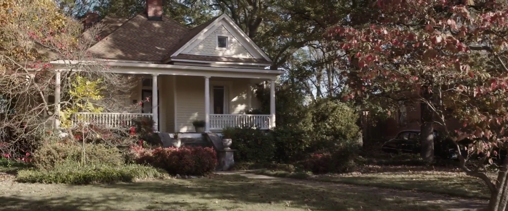
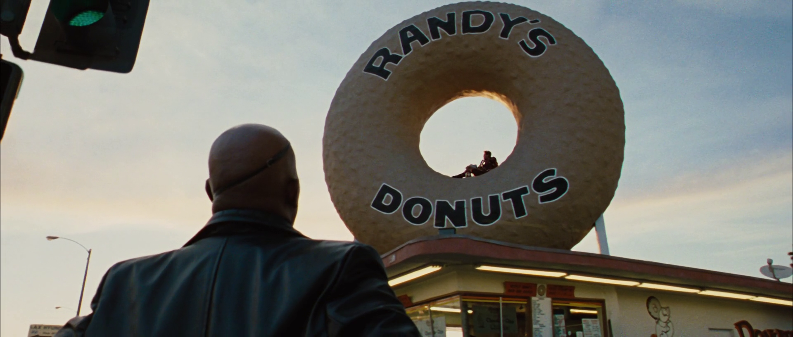

Corina Clay est une jeune américaine de 22 ans. Elle vit dans un petit appartement près d’Oxford, là où elle y étudie le droit international. Corina est une jeune femme très intélligente. Elle se fixe souvent des objectifs dans son quotidien, et se dépasse un peu plus chaque jour pour les accomplir.
Corina est une grande rêveuse. Elle lit beaucoup de romans fantastiques, de science-fiction et d’écrits à l’eau de rose entre deux bouquins de droit. Elle adore surtout se prendre du temps pour binge watcher ses séries préférées et revoir en boucle des films dont elle ne se lassera jamais. Elle est d’ailleurs une grande fan de l’univers Marvel et tout ce qui l’entoure. (Les nombreux posters d’Iron Man collés sur ses murs peuvent en témoigner).
Corina rêve de voyages. Sa réussite scolaire est une grande fiertée pour elle, mais son train-train quotidien commence à fortement l’ennuyer. Plus le temps passe, plus l’impression que son appartement rétrécit est présente. Elle étouffe. Elle a besoin d’espace. Elle veut vivre, vraiment vivre. Voir les endroits qu’elle a toujours rêvé de visiter.

Alors elle se souvient. Elle se souvient de ses premières semaines en Angleterre. Elle, la petite américaine perdue mais pleine d’espoir pour son avenir. Elle avait décidé à l’époque de se débrouiller “comme une grande” et elle avait entrepris un voyage vers deux lieux de tournage londoniens des films marvel.
Great Scotland Yard dans le quartier St. James de Westminster fut sa première destination. Rue iconique du film Docteur Strange, elle se souvient avoir regardé en l’air, s’imaginant être au cœur de l’action. Mais le film ne l’ayant pas plus marquée que ça, elle continua son petit road trip en solo vers sa seconde destination.
Rapidement, l’immensité de ce nouveau lieu l’avait envahie, elle revivait presque en direct sa stupéfaction face à son écran de télévision, lors de son tout premier visionnage du film Thor, le monde des ténèbres. Le Old Royal Naval College est l'ensemble architectural central du Maritime Greenwich, situé à Greenwich à Londres. Elle apprit même grâce à Google que le site était classé au Patrimoine mondial par l’UNESCO. Mais son petit voyage avait rapidement pris fin, et son année scolaire avait débuté.
Le temps à couler, les grandes vacances sont enfin là, et Corina attend impatiente, son billet d’avion dans les mains, qu’on appelle son vol. Le trajet est long. Londres - Washington. Sa famille l’attend dans le terminal de l’aéroport, une énorme pancarte avec son prénom inscrit dessus. Son frère et sa sœur ne peuvent retenir leur joie lorsqu’ils la voient. Corina est assaillie de deux petits diablotins, qui ont bien trop grandis à son goût pendant son absence.
Le temps des familiarités et des retrouvailles passé, Corina se fixe un nouvel objectif, cocher quelques cases supplémentaires à sa longue liste de lieux à visiter. Sa famille vivant dans le centre de Washington, elle décide sur un coup de tête de prendre son sac à main et de partir en quête de sa nouvelle petite aventure. Elle arrive donc à la Piscine réfléchissante du mémorial de Lincoln. Fameuse scène du “on your left” crié par Captain America à son futur ami Sam (the falcon) dans Le soldat de l’Hiver. Corina s’imagine presque faire son jogging ici, mais elle n’a pas vraiment le temps pour le sport. Elle passa son après-midi au bord de l’eau en lisant un livre pour son école au calme. Il faisait bon dehors, elle en a donc pleinement profité.
Corina rentra chez elle et se mit devant son ordinateur. Ses rêves étaient grands, mais pas sa bourse. Elle se décida donc à finir la liste des lieux qu’elle voulait visiter, tout en restant les fesses dans sa chaise de bureau. Elle ouvrit une application de cartes et rechercha les fameux endroits.
Son premier choix se situait proche de chez elle. New-York. Un jour elle prendrait le temps d’y retourner, elle se promettait. The Franklin K. Lane High School. Lycée existant réellement et servant de lieu de tournage pour certaines scènes des films Spider-Man. Le fameux lycée de Peter Parker, ou l’homme araignée selon les goûts. Étudier là-bas doit être vraiment sympa en sachant que de potentielles stars hollywoodiennes y sont passées.
L’aéroport de Leipzig-Halle n’est pas vraiment un lieu touristique. Mais la très longue scène de combat entre l’équipe d’Iron Man et l’équipe de Captain America reste gravée dans son esprit depuis son premier visionnage sur grand écran. C’était d’ailleurs un des tout premiers films Marvel qu’elle était allée voir seule au cinéma. Elle était team Cap ! Heureusement que l’aéroport n’a pas été réellement détruit !
Parmi les scènes qui l’avaient le plus affectée, la fin de Avengers Endgame restait l’une des plus tristes à son avis. 1340 Metropolitan Avenue, East Atlanta Village. Une simple maison, vue de l’extérieure, et éternelle demeure de Captain et son amour de toujours Peggy. Savoir qu’un monde cinématographique sans Captain America existerait à l’avenir l’avait brisée, et c’était en larmes qu’elle avait éteint son ordinateur à l’époque.
 Le dernier point de sa longue liste d’endroits à visiter était probablement celui qu’elle attendait le plus, mais également celui le plus éloigné de son domicile. Randy’ Donuts d’Inglewood. Un simple marchand de donuts en apparence mais scène incontournable de son film préféré, Iron Man 2. On y voit Tony Stark grignoter des donuts, à l’intérieur du donuts géant, enseigne du magasin. Elle adorerait pouvoir prendre une photo d’elle même à la place du personnage.Corina referma son ordinateur en inspirant fortement et en se penchant en arrière sur sa chaise de bureau. Elle se dirigea d’une démarche très lasse vers son très cher lit, se glissa sous sa couette et ferma les yeux. Et c’est lors de son profond sommeil réparateur de son fort décalage horaire, que Corina rêva le plus. Elle s’imaginait faire partie des avengers.